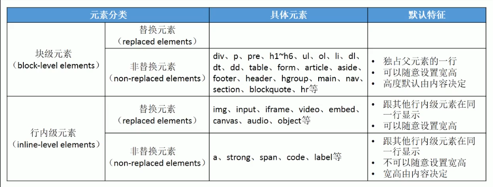
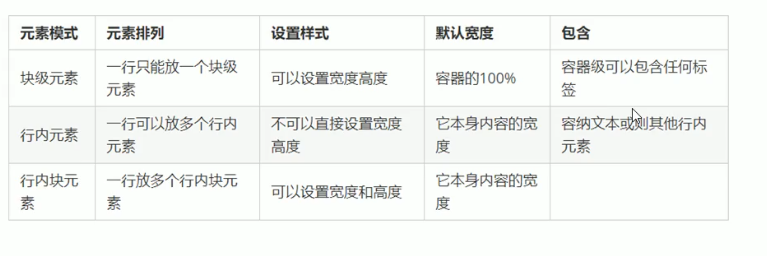

在HTML中已经知道html标签就等价于html元素，而根据元素的显示模式(即能不能在同一行上显示)可以将HTML元素分为两大类。
块级元素(block-level elements)
特点：独占它所属父元素的一行，宽高内外边距都可以设置，宽度默认是它所属父元素的100%，高度由内容撑开。
可以当成一个矩形容器里面嵌套其它行内或块级元素(注意p元素和h1~h6元素不能放其它块元素)。如：div，h1~h6，p，ul，ol，dl，li，dt，dd，table，form，article，aside，footer，header，nav等。
行内级元素(inline-level elements)，也叫内联元素。
特点：多个行内级元素可以在它们所属父元素的一行上显示，宽高设置无效(img，input，video，audio，canvas等设置宽高有效)，宽高默认就是内容的宽高。
只能嵌套其它行内级元素或文本内容(a元素可以嵌套任意元素除了本身)。如：span，img，a，strong，em，b，i，label，canvas，input，button，video，audio等。

通过修改css的display属性可以修改css元素的显示模式。
display有4个常用值
block 让元素显示为块级元素
inline 让元素显示为行内级元素
none 隐藏元素，不占据空间
inline-block 让元素同时具有块级元素和行内级元素的特点。
可以设置宽高可以同一行显示。宽高由内容撑开。
让a span 能设置宽高，让div，p等能和别人在同一行。

还有以下的一些取值不过用的比较少，效果等同于某些HTML元素
table table元素 一个block-level表格
inline-table table元素 一个inline-level表格
table-row tr元素
list-item li元素
新闻
小米导航栏
分页列表
css还有一个属性是用来设置元素可见性的：visibility。
display:none;也是实现元素的隐藏，且元素在页面中不占有位置(物理空间)。
visibility:visible;//元素可见(默认)
visibility:hidden;//元素隐藏，视觉上的不可见，但是在页面中依然占有位置。
上面的div设置了visibility，内容不见了但是位置还占着。
在css中子元素默认是存在父元素的内容区中的，理论上是不能大于父元素的内容区大小的。
如果超出了则称超出部分为溢出内容，父元素默认是把溢出内容直接显示在父元素外面的。
通过css的overflow属性可以控制父元素如何处理溢出内容的。
overflow:visible;默认值即直接在父元素外面显示。
hidden;溢出内容隐藏不显示。
scroll;为父元素添加滚动条，在父元素内容区显示。
auto;有溢出内容自动添加水平/垂直滚动条，没有正常显示。